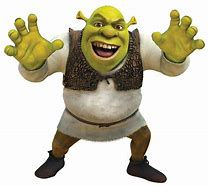

SHEREK

Shrek é o protagonista da franquia de filmes animados da DreamWorks.
Ele é um ogro rabugento, mas de bom coração, que inicialmente vive
isolado em seu pântano, valorizando sua solidão. Sua vida muda quando conhece
o falante Burro e embarca em uma jornada para resgatar a princesa Fiona,
com quem acaba se apaixonando. Ao longo dos filmes, Shrek aprende a
aceitar a si mesmo e sua nova família, desafiando estereótipos sobre
vilões e heróis dos contos de fadas. Seu humor ácido, sua aparência
intimidadora e sua personalidade cativante o tornaram um dos personagens
mais icônicos da animação.
VOLTAR